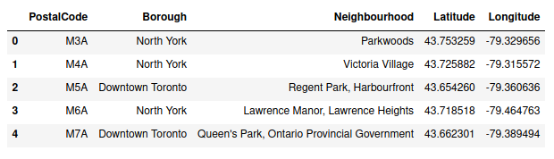
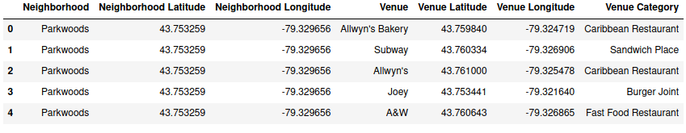
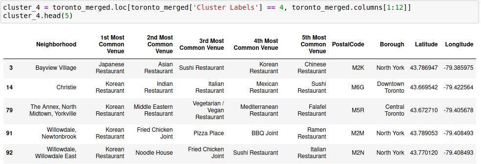

Exploring The Restaurants of Toronto
Neighborhoods

Introduction
Toronto is the one of most populous city in the North America, home of many great business.
It is one of the most diverse cities on the planet, as it is home to over 6 million people and over 300
languages.
As quoted in an article - What Food Tells Us About Culture:
"Food is not rational Food is culture, habit, craving and identity."
Undoubtedly, Food Diversity is an important part of an ethnically diverse metropolis.
The idea of this project is to categorically segment the neighborhoods of Toronto into major clusters and
examine their cuisines. A desirable intention is to examine the neighborhood cluster's food habits and
taste. Further examination might reveal if food has any relationship with the diversity of a neighborhood.
The purpose of this project is to help to understand the diversity of a neighborhood by leveraging venue
data from the Foursquare’s location API and k-means clustering machine learning algorithm. Exploratory Data
Analysis will help to discover further about the culture and diversity of the neighborhood. Stakeholders
would be the one who are interested to use this quantifiable analysis to understand the distribution of
different cultures and cuisines over one of the most diverse cities on the planet - Toronto. And, this
project can be used by a new food investor who is willing to open his or her restaurant over there. Or by a
government or authority to examine and study their city's culture diversity better.
Data acquisition and cleaning
In this project the Scarborough dataset is used, which have been scrapped from Wikipedia on Week 3 of the capstone project course.
Link to Data: https://en.wikipedia.org/wiki/List_of_postal_codes_of_Canada:_M
Geolocation data: https://cocl.us/Geospatial_data
Foursquare API Data
Data about different venues in different neighborhoods of that specific borough have been required. In order to gain that information we will use "Foursquare" locational information. Foursquare is a location data provider with information about all manner of venues and events within an area of interest. Such information includes venue names, locations, menus and even photos. As such, the foursquare location platform will be used as the sole data source since all the stated required information can be obtained through the API. After finding the list of neighborhoods, we then connect to the Foursquare API to gather information about venues inside each and every neighborhood. For each neighborhood, we have chosen the radius to be 100 meter. The data retrieved from Foursquare contained information of venues within a specified distance of the longitude and latitude of the postcodes. The information obtained per venue as follows:
- Neighborhood
- Neighborhood Latitude
- Neighborhood Longitude
- Venue
- Name of the venue
- Venue Latitude
- Venue Longitude
- Venue Category
Methodology
Methodology Download and Explore Toronto Dataset In order to segment the neighborhoods of Toronto, a dataset is required that contains the 10 boroughs and the 103 neighborhoods. This dataset is scraped from wikipedia website using the mentioned URL. After, this dataset is merged with the respective dataset of the coordinates data for each neighborhood. Once the the data are ready, it is analyzed to understand the structure of the file. The data returned is transformed, into a pandas dataframe, by looping through the data and filling the dataframe rows one at a time using the following depicted loop.
As a result, a dataframe is created with Borough, Neighborhood, Latitude and Longitude details of the Toronto’s neighborhood.

Upon analysis, it is found that the dataframe consists of
10 boroughs and 103 neighborhoods. Further, ‘geopy’ library
is used to get the latitude and longitude values of Toronto,
which was returned to be Latitude: 43.6534817, Longitude: -79.3839347.
The following depiction is a map generated using python ‘folium’ library to visualize
the map of Toronto and its neighborhoods.
Foursquare Location Data
The Foursquare API is used to explore the neighborhoods and segment them. To access the API, ‘CLIENT_ID’, ‘CLIENT_SECRET’ and ‘VERSION’ is defined. There are many endpoints available on Foursquare for various GET requests. But, to explore the cuisines, it is required that all the venues extracted are from ‘Food’ category. Foursquare Venue Category Hierarchy is retrieved using the following code block: The returned request is:
The returned request is further analyzed:
Upon analysis, it is found that there are 10 major or parent categories of venues, under which all the other sub-categories are included. Following depiction shows the ‘Category ID’ and ‘Category Name’ retrieved from API:
As said earlier, the ‘FOOD’ category in the above depiction is the matter of interest. A function is created to return a dictionary with ‘Category ID’ & ‘Category Name’ of ‘Food’ & it's sub-categories.
To further understand the results of GET Request, the first neighborhood of the ‘Toronto’ dataset is explored. The first neighborhood returned is ‘KFC’ with Latitude 43.7532586 and Longitude -79.3296565. Then, a GET request URL is created to search for Venue with ‘Category ID’ = '4d4b7105d754a06374d81259', which is the ‘Category ID’ for ‘Food’, and radius = 500 meters.
The returned request is then examined, which is as follows:
The request returned the ‘Category Name’ of the venue as 'KFC' which is of 'Food' category. As, the aim is to
segment the neighborhoods of Toronto with respect to the ‘Food’ in its vicinity, it is further required to
fetch this data from all the 306 neighborhoods' venues.
To overcome the redundancy of the process followed above, a function ‘getNearbyFood’ is created. This
functions loop through all the neighborhoods of Toronto and creates an API request URL with radius = 500,
LIMIT = 100. By limit, it is defined that maximum 100 nearby venues should be returned. Further, the GET
request is made to Foursquare API and only relevant information for each nearby venue is extracted from it.
The data is then appended to a python ‘list’. Lastly the python ‘list’ is unfolded or flattened to append it
to dataframe being returned by the function.
It is inquisitive to know that Foursquare API returns all the sub-categories, if a top-level category is
specified in the GET Request.
Pickle
Pickle is a very important and easy-to-use library. It is used to serialize the information retrieved from GET requests, to make a persistent ‘.pkl’ file. This file can later be deserialized to retrieve an exact python object structure. This is a crucial as it will counter any redundant requests to the Foursquare API, which is chargeable over the threshold limits
The returned ‘dataframe’ is as follows:
Exploratory Data analysis
The merged dataframe ‘toronto_venues’ has all the required information. The size of this dataframe is determined, and it is found that there are total 4263 venues.
Now, it is important to find out that how many unique categories can be curated from all the returned venues. There are 156 such categories, with most occurring venues as follows:
Data Cleaning
It is crucial to understand that the point of interest in the project is to understand the cultural diversity of a neighborhood by clustering it categorically, using the venues’ categories. Thus, it is important to remove all the venues from the ‘dataframe’ which have generalized categories. Here, by generalized, it means that these categorized venues are common across different cultures and food habits. Example of categories of this type of venues are Coffee Shop, Cafe, etc. So, firstly all the unique categories are fed into a python ‘list’.
Data Cleaning It is crucial to understand that the point of interest in the project is to understand the cultural diversity of a neighborhood by clustering it categorically, using the venues’ categories. Thus, it is important to remove all the venues from the ‘dataframe’ which have generalized categories. Here, by generalized, it means that these categorized venues are common across different cultures and food habits. Example of categories of this type of venues are Coffee Shop, Cafe, etc. So, firstly all the unique categories are fed into a python ‘list’. Then, manually the categories are determined to be ‘general’ (as explained above). This data pre-preparation totally depends upon the ‘Data Analyst’ discretion and can be modified as required. Following are the categories listed as ‘general’:
A simple subtraction of two python ‘list’ i.e ‘unique_categories’ and ‘general_categories’ gives a ‘list’ of all the categories which are required for further analysis. Following image depicts the result of the above activity:
A simple subtraction of two python ‘list’ i.e ‘unique_categories’ and ‘general_categories’ gives a ‘list’ of all the categories which are required for further analysis. Following image depicts the result of the above activity: The python ‘list’ curated above, is used to remove all the venues with categories not in ‘food_categories’, and the following dataframe is retrieved:
Again, the number of unique categories is examined, and it is found that there are only 92 of them, as compared to 156 earlier. That means, almost 50% of the data was a noise for the analysis. This essential step, data cleaning, helped to capture the data points of interest.
Feature Engineering
Now, each neighborhood is analyzed individually to understand the most common cuisine being served within its 500 meters of vicinity. The above process is taken forth by using ‘one hot encoding’ function of python ‘pandas’ library. One hot encoding converts the categorical variables (which are ‘Venue Category’) into a form that could be provided to ML algorithms to do a better job in prediction.
Upon converting the categorical variables, as shown above, ‘Neighbourhood’ column is added back which results into the following:
Further, number of venues of each category in each neighborhood are counted.
Data visualizisation
These top 10 categories are further plotted individually on bar graph using python ‘seaborn’ library. The following code block creates the graph of top 10 neighborhoods for a category.

Next, the rows of the neighborhood are grouped together and the frequency of occurrence of each category is calculated by taking the mean.
As the limit is set to be 100, there will be many venues being returned by the Foursquare API. But a neighborhood food habit can be defined by the top 5 venues in its vicinity. Following ‘for’ loop creates a dataframe to record the above-mentioned data points:
Further, the above created dataframe is fed with the top 5 most common venues categories in the respective neighborhood.
Machine Learning
‘k-means’ is an unsupervised machine learning algorithm which creates clusters
of data points aggregated together because of certain similarities. This algorithm will be used to count
neighborhoods for each cluster label for variable cluster size. To implement this algorithm, it is very
important to determine the optimal number of clusters (i.e. k). There are 2 most popular methods for the
same, namely ‘The Elbow Method’ and ‘The Silhouette Method’.
The Elbow Method: The Elbow Method calculates the sum of squared distances of samples
to their closest cluster center for different values of ‘k’. The optimal number
of clusters is the value after which there is no significant decrease in the sum
of squared distances. Following is an implementation of this method
(with varying number of clusters from 1 to 49):
Sometimes, Elbow method does not give the required result, which happened in this case. As, there is a gradual decrease in the sum of squared distances, optimal number of clusters can not be determined. To counter this, another method can be implemented, as discussed below.
The Silhouette Method: As quoted in Wikipedia – “The Silhouette Method measures how similar a point is to its own cluster (cohesion) compared to other clusters (separation).” Following is an implementation of this method. As it requires minimum 2 clusters to define dissimilarity number of clusters (i.e. ‘k’) will vary from 2 to 49:
There is a peak at k = 2, k = 4 and k = 8. Two and four number of clusters will cluster the neighborhoods very broadly. Therefore, number of clusters (i.e. ‘k’) is chosen to be 8.
k-Means
Following code block runs the k-Means algorithm with number of clusters = 8 and prints the counts of neighborhoods assigned to different clusters:
Further the cluster labels curated are added to the dataframe to get the desired results of segmenting the neighborhood based upon the most common venues in its vicinity:
Now, ‘neighborhoods_venues_sorted’ is merged with ‘toronto_data’ to add the Borough, Latitude and Longitude for each neighborhood.
Again, the Toronto City’s neighborhoods are visualized by using the code block as shown, which utilizes the python ‘folium’ library.
Cluster 0
Following are the results of the Cluster – 0 analysis:
Cluster 1
Following are the results of the Cluster – 1 analysis:
Cluster 2
Following are the results of the Cluster – 2 analysis:
Cluster 3
Following are the results of the Cluster – 3 analysis:
Cluster 4
Following are the results of the Cluster – 4 analysis:
Cluster 5
Following are the results of the Cluster – 5 analysis:
Cluster 6

Following are the results of the Cluster – 6 analysis:
Cluster 7
Following are the results of the Cluster – 7 analysis:
Conclusion
On application of Clustering Algorithm, k-Means or others, to a multi-dimensional dataset, a very inquisitive results can be curated which helps to understand and visualize the data. The neighborhoods of Toronto were very briefly segmented into eight clusters and upon analysis it was possible to rename them basis upon the categories of venues in and around that neighborhood. Along with the Canadian cuisine, Italian and Chinese are very dominant in Toronto and so is the diversity statistics. The results of this project can be improved and made more inquisitive by using a current Toronto’s dataset along with API platforms which are more interested in Food Venues (like Yelp, etc.) The scope of this project can be expanded further to understand the dynamics of each neighborhood and suggest a new vendor a profitable location to open his or her food place. Also, a government authority can utilize it to examine and study their city's culture diversity better.